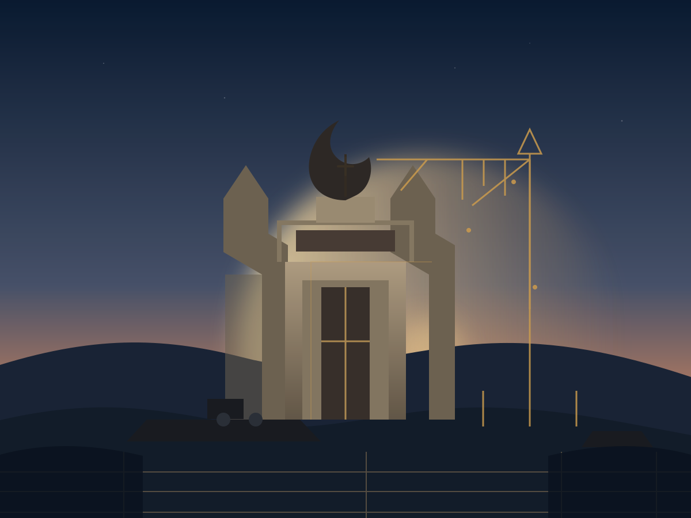

Obras18 de outubro de 2026
Comunidade se reúne em oração pelo início das obras
Fiéis e amigos do projeto participaram de um momento de intercessão e gratidão pelo caminho percorrido até aqui. A celebração reuniu famílias, jovens e devotos de São Jorge em torno do sonho da nova Catedral.
Ler notícia completa
Durante o encontro, foram apresentados os próximos passos do projeto e reforçada a importância da participação de toda a comunidade. A secretaria informou que novos encontros de oração serão realizados ao longo do ano, sempre abertos à participação de todos.
“Cada pessoa que se une a nós é uma pedra viva nesta construção”, destacou a equipe responsável. Ao final, os presentes acenderam velas e confiaram a obra à intercessão de São Jorge.